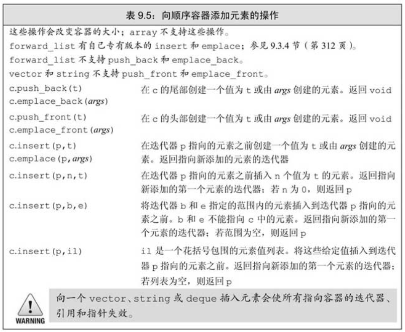

《C++ Primer 5th》第九章中的重要知识点，这一章的内容是顺序容器的基础知识。
顺序容器
当将一个容器初始化为另一个容器的拷贝时，两个容器的容器类型和元素类型都必须相同，如果使用迭代器则可以用不同类型的容器来初始化1
2
3
4
5
6
using std::vector;using std::list;
vector<string> a{"ac","ree","wq"};
list<const char*> b{"aa","ew","ww"};
vector<string> c(b); //wrong
vector<string> d(b.begin(), b.end()); //OK
swap与assign
这是两个操作顺序容器元素的函数，swap有成员函数版本和非成员函数版本，推荐使用非成员函数版本
容器比较
两个容器如果能进行比较运算，则比较结果为第一不同元素之间的大小
向顺序容器中添加元素

插入元素会使得现有的迭代器，范围循环失效
insert()会返回插入元素的第一个元素1
2
3
4
5list<string> lst;
iter = lst.begin();
while(cin >> word)
iter = lst.insert(iter, word);
// 等价于push_front
emplace函数在容器中直接构造元素。传递给emplace函数的参数必须与元素类型的构造函数相匹配。
当调用push或insert成员函数时，我们将元素类型的对象传递给它们，这些对象被拷贝到容器中。而当我们调用一个emplace成员函数时，则是将参数传递给元素类型的构造函数。emplace成员使用这些参数在容器管理的内存空间中直接构造元素。
容器操作使迭代器失效
- 如果容器是vector或string，且存储空间被重新分配，则指向容器的迭代器、指针和引用都会失效。如果存储空间未重新分配，指向插入位置之前的元素的迭代器、指针和引用仍有效，但指向插入位置之后元素的迭代器、指针和引用将会失效。
- 对于deque，插入到除首尾位置之外的任何位置都会导致迭代器、指针和引用失效。如果在首尾位置添加元素，迭代器会失效，但指向存在的元素的引用和指针不会失效。
- 对于list和forward_list，指向容器的迭代器（包括尾后迭代器和首前迭代器）、指针和引用仍有效
注意：当我们删除元素时，尾后迭代器总是会失效。
由于向迭代器添加元素和从迭代器删除元素的代码可能会使迭代器失效，因此必须保证每次改变容器的操作之后都正确地重新定位迭代器。这个建议对vector、string和deque尤为重要
换言之，保存尾迭代器是个坏主意，因为它有可能因为插入或者删除元素变成无效的迭代器1
2
3
4
5
6auto end = vec.end();
while(p!=end) // bad
/***/
while(p!=vec.end()) // good
/***/
vector和string的额外操作
vector在内存空间不足的时候会申请当前空间翻倍的新空间，使用c++11中的新函数 shrink_to_fit()可以退回多余的capacity。
string可以通过substr来部分的提取。除此之外，还有append，replace等函数对string进行操作，具体需要用到的时候再看。
容器适配器
stack、queue和priority_queue是三个顺序容器适配器。本质上，一个适配器是一种机制，能使某种事物的行为看起来像另外一种事物一样。一个容器适配器接受一种已有的容器类型，使其行为看起来像一种不同的类型。例如，stack适配器接受一个顺序容器（除array或forward_list外），并使其操作起来像一个stack一样。
他们在顺序容器之上定义了新的接口，使之能表现地像相应的数据类型